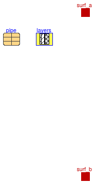

Package with base classes for Buildings.Fluid.HeatExchangers.RadiantSlabs
This package contains base classes that are used to construct the models in Buildings.Fluid.HeatExchangers.RadiantSlabs.
Extends from Modelica.Icons.BasesPackage (Icon for packages containing base classes).
| Name | Description |
|---|---|
| Multiplies the heat flow rate | |
| Model that multiplies the mass flow rate | |
| Convective heat transfer in pipes and fictitious resistance to average slab temperature | |
| Base class for radiant slab | |
| Functions for convective heat transfer |
 Buildings.Fluid.HeatExchangers.RadiantSlabs.BaseClasses.HeatFlowRateMultiplier
Buildings.Fluid.HeatExchangers.RadiantSlabs.BaseClasses.HeatFlowRateMultiplier
Multiplies the heat flow rate

This model multiplies the heat flow rate so that
0 = port_b.Q_flow + k * port_Q.m_flow.
The temperature remains unchanged. Therefore, this model does not conserve energy. It is used in Buildings.Fluid.HeatExchangers.RadiantSlabs.ParallelCircuitsSlab to avoid having to instanciate multiple slab models in parallel, with each having the same mass flow rate and temperatures.
| Type | Name | Default | Description |
|---|---|---|---|
| Real | k | Gain for mass flow rate |
| Type | Name | Description |
|---|---|---|
| HeatPort_a | port_a | |
| HeatPort_b | port_b |
 Buildings.Fluid.HeatExchangers.RadiantSlabs.BaseClasses.MassFlowRateMultiplier
Buildings.Fluid.HeatExchangers.RadiantSlabs.BaseClasses.MassFlowRateMultiplier
Model that multiplies the mass flow rate

This model multiplies the mass flow rate so that
0 = port_b.m_flow + k * port_a.m_flow.
The specific enthalpy, the species concentration and the trace substance concentration remains unchanged. Therefore, this model does not conserve mass or energy. It is used in Buildings.Fluid.HeatExchangers.RadiantSlabs.ParallelCircuitsSlab to avoid having to instanciate multiple slab models in parallel, with each having the same mass flow rate and temperatures.
Extends from Modelica.Fluid.Interfaces.PartialTwoPort (Partial component with two ports).
| Type | Name | Default | Description |
|---|---|---|---|
| replaceable package Medium | PartialMedium | Medium in the component | |
| Real | k | Gain for mass flow rate | |
| Assumptions | |||
| Boolean | allowFlowReversal | system.allowFlowReversal | = true to allow flow reversal, false restricts to design direction (port_a -> port_b) |
| Type | Name | Description |
|---|---|---|
| FluidPort_a | port_a | Fluid connector a (positive design flow direction is from port_a to port_b) |
| FluidPort_b | port_b | Fluid connector b (positive design flow direction is from port_a to port_b) |
 Buildings.Fluid.HeatExchangers.RadiantSlabs.BaseClasses.PipeToSlabConductance
Buildings.Fluid.HeatExchangers.RadiantSlabs.BaseClasses.PipeToSlabConductance
Convective heat transfer in pipes and fictitious resistance to average slab temperature

Model to compute the convective heat transfer inside a straight pipe. The convective heat transfer coefficient is computed as a function of the mass flow rate using the function Modelica.Fluid.Dissipation.HeatTransfer.StraightPipe.kc_overall_KC.
| Type | Name | Default | Description |
|---|---|---|---|
| replaceable package Medium | Modelica.Media.Interfaces.Pa... | Medium in the component | |
| HeatTransfer | heatTransfer | Buildings.Fluid.HeatExchange... | Model for heat transfer between fluid and slab |
| Area | APip | Pipe inside surface area [m2] | |
| kc_overall_IN_con | kc_IN_con | Parameters for convective heat transfer calculation | |
| ThermalResistance | RFic | Average fictitious thermal resistance between pipe surface and plane that contains pipe [K/W] | |
| ThermalResistance | RWal | Thermal resistance through the pipe wall [K/W] | |
| MassFlowRate | m_flow_nominal | Nominal mass flow rate [kg/s] | |
| Type | Name | Description |
|---|---|---|
| replaceable package Medium | Medium in the component | |
| input RealInput | m_flow | Fluid mass flow rate from port_a to port_b [kg/s] |
| input RealInput | T_a | Temperature at fluid port_a [K] |
| input RealInput | T_b | Temperature at fluid port_b [K] |
| HeatPort_a | solid | Heat port at solid interface |
| HeatPort_b | fluid | Heat port at fluid interface |
 Buildings.Fluid.HeatExchangers.RadiantSlabs.BaseClasses.Slab
Buildings.Fluid.HeatExchangers.RadiantSlabs.BaseClasses.Slab
Base class for radiant slab

This partial model is used to construct radiant slab models with one circuit or with multiple parallel circuits.
| Type | Name | Default | Description |
|---|---|---|---|
| SystemType | sysTyp | Radiant system type | |
| Distance | disPip | Pipe distance [m] | |
| Generic | pipe | Record for pipe geometry and material | |
| Construction | |||
| Generic | layers | Definition of the construction, which must have at least two material layers | |
| Integer | iLayPip | Number of the interface layer in which the pipes are located | |
| Initialization | |||
| Construction | |||
| Boolean | steadyStateInitial | false | =true initializes dT(0)/dt=0, false initializes T(0) at fixed temperature using T_a_start, T_c_start and T_b_start |
| Temperature | T_a_start | 293.15 | Initial temperature at surf_a, used if steadyStateInitial = false [K] |
| Temperature | T_b_start | 293.15 | Initial temperature at surf_b, used if steadyStateInitial = false [K] |
| Type | Name | Description |
|---|---|---|
| HeatPort_a | surf_a | Heat port at construction surface |
| HeatPort_a | surf_b | Heat port at construction surface |